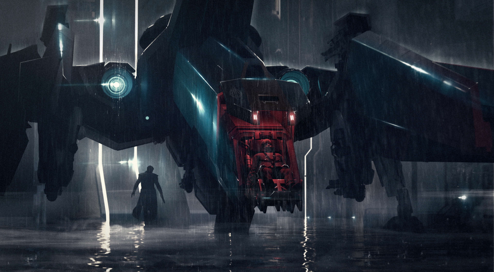

Things you can do
There are loads of choices to make and missions complete, however they will be catagorised into these professions. lets take a look at some.

There are loads of choices to make and missions complete, however they will be catagorised into these professions. lets take a look at some.
Bounty hunter will be one of the more challenging professions in starcitizen. If some someone breaks the law in Star Citizen they will be listed as a public enemy and have a bounty on their head. Bounty hunters will have the option to bring them in dead or alive for credits. Players and organizations can also put a bounty on another player for bounty hunters to collect. Some ships liek the anvil hawk (shown on the left) and the avenger stalker have prison pods to bring the criminals back alive to prison, where they will mine rocks and do other menial tasks until their sentence is over.
